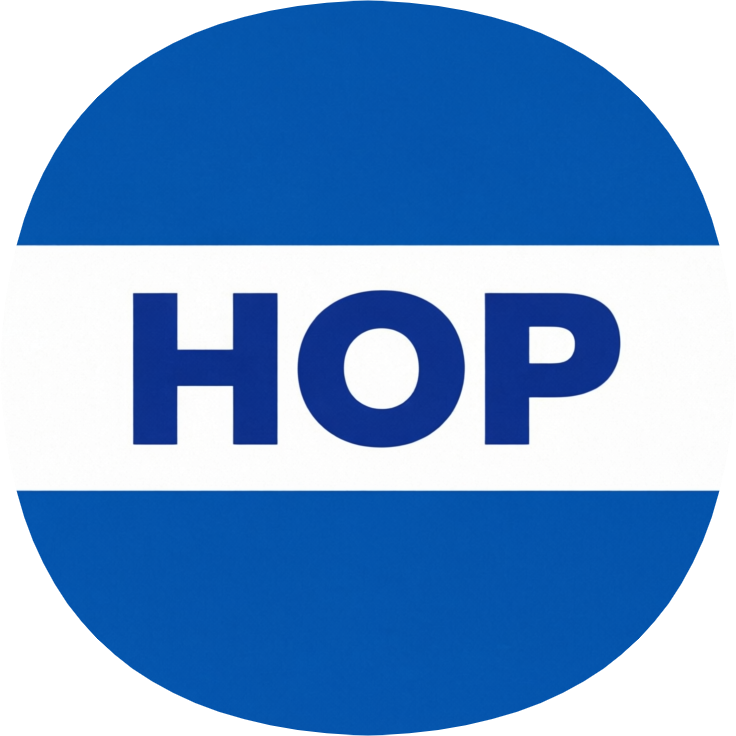
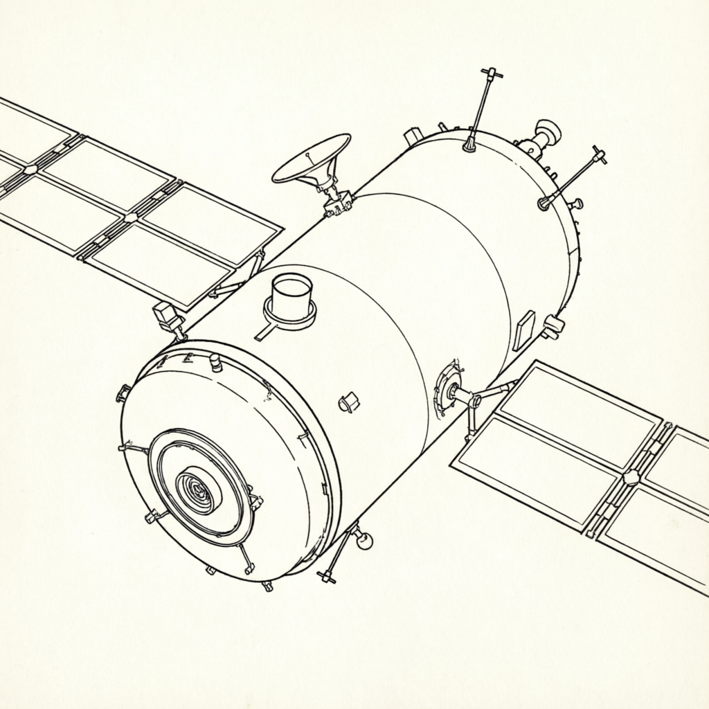
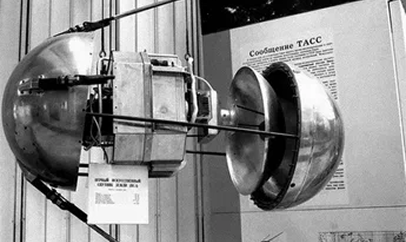
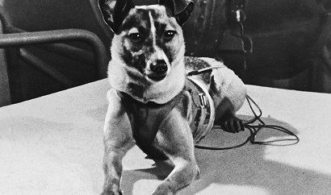
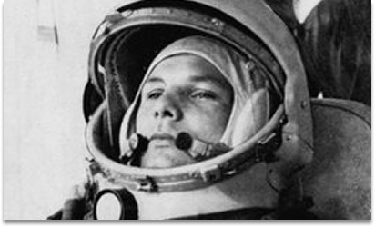
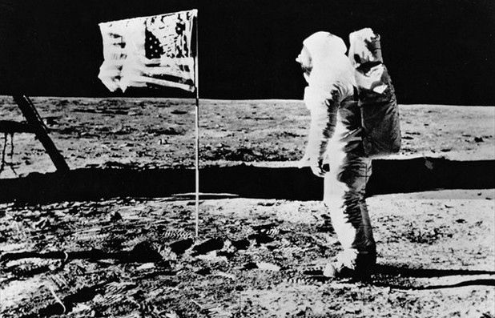
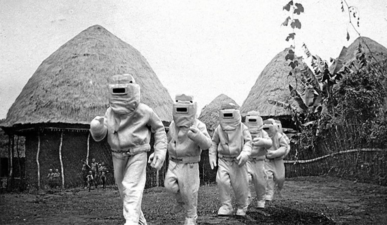

H.O.PОфициальный сайт космической программы Гондураса. Здесь вы найдёте всю информацию о миссии, её целях и участниках.
Узнать больше
Подготовка к проекту по запуску первой ракеты со спутником в космос.

После Второй мировой войны СССР и США начали активно разрабатывать ракетные технологии, открыв путь к освоению космоса.

В 1957 году собака Лайка стала первым живым существом на орбите Земли, доказав возможность жизни в космосе.

12 апреля 1961 года Юрий Гагарин совершил первый в истории полёт человека в космос на корабле «Восток-1».

В июле 1969 года Нил Армстронг первым ступил на поверхность Луны в рамках программы «Аполлон-11».

Замбия развивала собственную космическую программу, осуществляя тренировки будущих космонавтов .
Honduras Orbital Program разрабатывает инновационные спутниковые системы для мониторинга Земли. Современные технологии позволяют отслеживать изменения климата, прогнозировать стихийные бедствия и защищать население Гондураса.
Узнать больше →